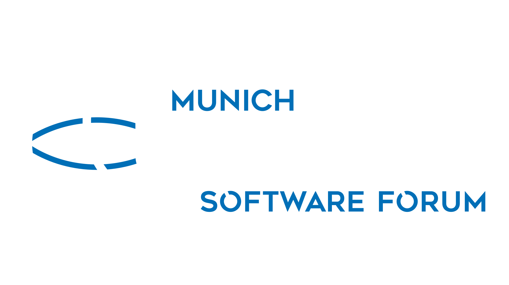
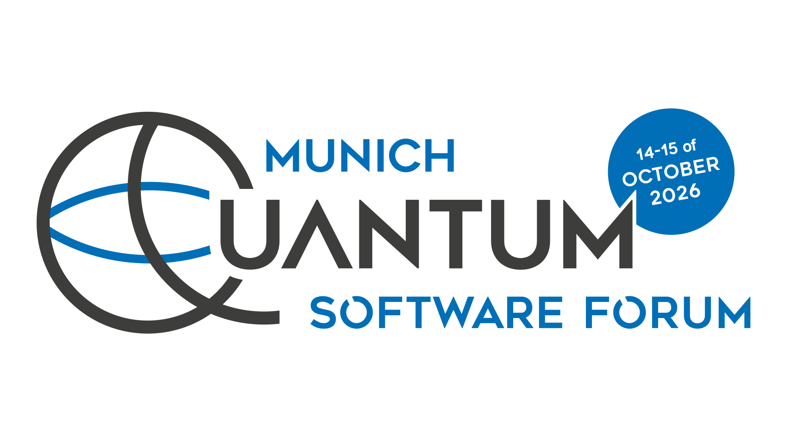
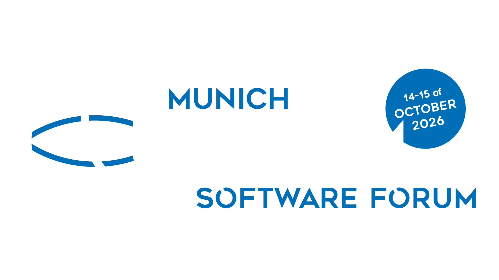

MQSF Logos
Download our logo for event announcements, presentations and other MQSF materials. Use SVG for sharp results at any size, or PNG for applications that do not accept SVG.
Light Background
The year-neutral logo with charcoal lettering for light backgrounds. The checkerboard is only part of this preview.
Open full logo image to copy

Transparent PNG: 817 × 460 pixels

Dark Background
The year-neutral logo with white lettering for dark backgrounds.
Open dark logo image to copy

Transparent PNG: 816 × 460 pixels

2026 · Light Background
The dated logo for promoting the 14–15 October 2026 edition on light backgrounds.
Open 2026 logo image to copy

Transparent PNG: 1949 × 1096 pixels

2026 · Dark Background
The dated logo for promoting the 14–15 October 2026 edition on dark backgrounds.
Open dark 2026 logo image to copy

Transparent PNG: 1949 × 1096 pixels
Using the Logos
Keep the original colors and proportions, leave clear space around the logo and choose the version suited to your background. Use the dated versions only for the 2026 edition.
To copy an image, open it using the link above, then right-click and choose “Copy Image”. On a phone or tablet, touch and hold the image to show the available copy or save options.